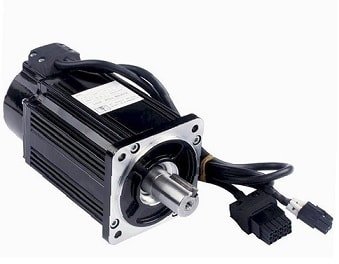

Купить серводвигатель. Что нужно знать?
Cерводвигатели также называют сервомоторами. Они могут работать по асинхронному или синхронному принципу, используя переменный или постоянный ток. Это разновидности электрических двигателей, на валу которых установлен датчик, который в реальном времени передаёт сигналы на управляющее устройство. Обеспечивается обратная связь в отношении положения вала и обеспечиваются высокие показатели надёжности и точности.
Конкуренцию сервомоторам, как правило, составляют шаговые двигатели, но они уступают ввиду более низкого значения динамических и скоростных показателей. В станках ЧПУ в 80% случаев используют серводвигатели, их применяют в качестве управляемой электромеханической системы в исполнительном механизме.
Основные отрасли применения:
- ◈ промышленные роботизированные механизмы и машины-манипуляторы;
- ◈ станки ЧПУ;
- ◈ сборочные линии с автоматическим принципом работы;
- ◈ оборудование для измерений;
- ◈ привод систем позиционирования.
Преимущества:
- ◈ обеспечение высокого уровня точности по скорости и позиции;
- ◈ хорошая скорость перемещения;
- ◈ высокая динамика.
Как выбрать и купить серводвигатель
Комплектные сервоприводы подбираются по совместимости и мощности. Следует ориентироваться на характеристики пары “серводрайвер и серводвигатель”. В большинстве случаев следует выбрать комплектный привод.
Синхронные бесщеточные сервомоторы могут быть бесщёточными двигателями постоянного тока и вентильными электродвигателями. Они представляют собой трехфазные бесколлекторные машины, ротор выполняется из редкоземельных магнитов. Обладают большой мощностью и широким диапазоном скоростей вращения, коэффициент полезного действия более 90 процентов, в сочетании с большой перегрузочной способностью по моменту и высокой надёжностью, которая обеспечит длительный срок службы.
Cерводрайверы или сервоусилители представляют собой силовые блоки для управления сервомоторами. Серводрайвер поддерживает точное положение вала, которое задаётся контроллером числового программного управления. Параметры сервоусилителей различают по методам управления, сложности настройки, мощности и другим характеристикам.
Вентильные сервомоторы без щёток и с тормозом, установленным на вал используют на вертикальных осях с обратимыми передачами, там где груз при перемещении может падать после отключения питания сервопривода.